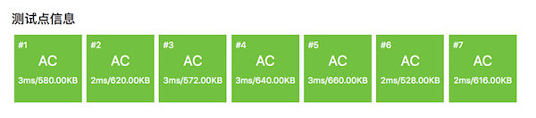

3.1.6. 整数快速幂算法（洛谷P1226）¶
整数快速幂算法（简称快速幂）是一个经典的数值运算算法，也是普及组的常考算法。它的功能就是快速计算整数的幂运算 \(a^n\)，\(a\) 称为底数，\(n\) 称为指数，指数大于等于零。根据数学定义，整数的幂运算就是将底数连乘指数次，另外有一个特例：任何数的0次幂都等于1。
所以按照数学定义我们可以很简单地用一个循环来计算出整数的幂。
int power(int a, int n)
{
if (n == 0) return 1;
int ans = 1;
for (int p = 0; p < n; p++)
ans *= a;
return ans;
}
除了数据类型 int 有点偏小以外，上面这段代码的正确性无懈可击，因为我们知道指数是一种增长速度快得可怕的运算，int 类型整数的绝对值最大也不过231-1，大约21亿多，用来计算整数幂很可能一不留神就爆掉了。但是就算改成 long long 类型情况也好不到哪里去，如果换成 double 类型那么数据的精度又成了大问题。所以上面这个算法的一个小问题就是它很可能需要有高精度整数运算算法的加持。
但是这不是最重要的，最重要的是上面这种朴素的算法在效率上非常堪忧。它需要着着实实地进行 \(n\) 次乘法计算，所以它的时间复杂度是 \(O(n)\)。鉴于计算机进行乘法运算本身就很费时，所以这样的运行效率并不能令人满意。假设用上了高精度乘法，那么这个朴素的算法就很费力了。这是它最大的问题所在，我们需要一种更优秀的算法，这就是经典的整数快速幂算法，效率高达 \(O(\log n)\)。
快速幂有两种不同的实现，一种基于对指数的二进制分解，另一种基于对指数的二分降幂。但二者只是实现技巧上的不同，本质上是完全相同的算法。
3.1.6.1. 指数拆分法¶
一切的一切来自于幂运算的一条基本性质：\(a^{b+c}=a^b\cdot a^c\)。这条性质很好理解，\(a^{b+c}\) 就是把底数 \(a\) 连乘 \((b+c)\) 次，所以就是先连乘 \(b\) 次再连乘 \(c\) 次。
所以如果我们能把比较大的指数 \(n\) 拆成少量的几个小一点的整数之和，那么就可以把一个规模比较大的问题拆分成几个规模比较小的子问题，然后再把这些小问题的解组合起来构造出原问题的解。这种思路就是所谓的分治法，是一种非常重要的算法设计方法。
那么具体要怎么拆分指数才能达到目的呢？拆分的方法必须满足一个条件：能够让拆出来的各个小整数幂之间有简单的递推关系，也就是从一个可以推出另一个而且方法很简单，这样才能达到提高运算效率的关系，否则是没有用的。这时候就需要用到二进制来帮忙了，我们把指数从十进制转换为二进制，可以发现指数可以拆分成若干个2的幂次方的和。举个例子，十进制的13，转换成二进制就是(1101)2。根据二进制数占位计数法的规则，它从高到低4个位的基数分别是23、22、21、20，这就意味着13可以拆分成1个23、1个22、0个21、1个20之和：13=8+4+1。
如此，以13为指数的幂可以改写成：\(a^{13}=a^{1\times8} \cdot a^{1\times4} \cdot a^{0\times2} \cdot a^{1\times1}\)，为了看得更清楚，我们把指数写成二进制：
现在可以看出一点端倪来了，只要把指数写成它的二进制形式，那么它的每一位都会对应一个基数。第 \(m\) 位的基数等于 \(a^{2^{m-1}}\)，第1位是最低位，它的基数是底数 \(a\) 本身，后一位上的基数是前一位上基数的平方。指数的二进制形式一共有几位，就有几个这样的基数。例如，指数的二进制形式一共有4位的话，那么从最低位（第1位）到最高位（第4位）对应的基数分别为：\(a^1,a^2,a^4,a^8\)。这些基数是不是要成为整个幂运算的因数，取决于二进制指数对应的位上是0还是1。
于是我们可以这样操作：从二进制指数的最低位开始到最高位逐位循环，初始时让结果等于1，对应0次方的情况，让基数等于底数本身，即最低位的基 \(a^1\)。每轮循环检查二进制指数的当前位上是不是1，如果是1就在结果上乘上基数，然后无论该位是0还是1，都把基数进行平方，让它成为下一轮循环的基数。这就是快速幂的基本思路，一共需要循环 \(\log n\) 轮，最差的情况下每轮循环进行两次整数乘法，工作量为 \(T(n)=2\log n\)，时间复杂度 \(O(\log n)\)。
在具体实现这个循环的时候，通常的做法是利用位运算来控制循环和取位：在每一次循环之后，把指数右移一位，这样下一轮循环要检查的位就移动到了最低位上，每一次循环只要固定地检查最低位就可以了。这样做同时带来一个便利，那就是循环结束条件可以设置为指数为0，当不断右移最终使得指数变成0的时候，说明最高位也已经检查掉了，循环可以结束了。
还有一个值得一提的地方，这样一个循环足以让所有零次幂得到正确的结果1，为什么？请思考原因。
先来看一个具体的例子，用上述算法来计算313。我们的基数变量叫做 base，结果变量叫做 ans，底数 a=3，指数 n=13。
轮次 |
n(2进制) |
base |
ans |
说明 |
|---|---|---|---|---|
初始 |
1101 |
3 |
1 |
开始循环前，ans初始化为1, base为底数3=31 |
1 |
1101 |
3 |
1 |
进入第1轮循环时指数最低位为1，表示结果要乘上基数3，然后指数右移一位变成110，基数平方一次变成9=32 |
2 |
110 |
9 |
3 |
进入第2轮循环时指数的最低位为0，表示结果不需要乘上基数，然后指数右移一位变成11，基数平方一次变成81=34 |
3 |
11 |
81 |
3 |
进入第3轮循环时指数的最低位为1，表示结果要乘上基数81，然后指数右移一位变成1，基数平方一次变成6561=38 |
4 |
1 |
6561 |
243 |
进入第4轮循环时指数的最低位为1，表示结果要乘上对应的基数6561，然后指数右移一位变成0，下一次循环将不再继续，基数是否平方已经不重要了 |
结束 |
0 |
— |
1594323 |
现在指数移成了0，循环结束，ans变量里就是最终的结果313=1594323 |
至此，通过4轮循环，一共7次乘法，完成了3的13次方的计算，结果正确。现在回过头去再看看上一段的算法描述，如果能看懂，那么来看一下代码，请先回顾好C++按位运算的语法知识。
#include <cstdio>
long long fast_power(int a, unsigned int n)
{
long long ans = 1, base = a;
while (n) {
if (n & 1) ans *= base;
n >>= 1;
base *= base;
}
return ans;
}
int main()
{
printf("0^0 = %lld\n", fast_power(0, 0));
printf("3^0 = %lld\n", fast_power(3, 0));
printf("3^13 = %lld\n", fast_power(3, 13));
printf("-3^13 = %lld\n", fast_power(-3, 13));
printf("-3^14 = %lld\n", fast_power(-3, 14));
printf("2^62 = %lld\n", fast_power(2, 62));
printf("2^63 = %lld\n", fast_power(2, 63));
return 0;
}
提示
这个算法非常优雅而且高效，上面是它最常见的一种C++语言实现，实际上它还可以有很多其他实现形式。例如对于不熟悉二进制位操作的人可能会习惯于用 n \= 2 来代替右移，用 if (n % 2) 来代替 if (n & 1) 检查最低位。循环也可以用 for 或者 do ... while 来实现。但是算法是不变的，要习惯于理解和记忆算法而不是具体的代码，因为代码是表象，它总是可以千变万化，而算法是精髓，它永远不变。作为对语言本身的练习，请至少用一种别的方式来实现一遍这个算法。
main() 函数中测试了几组幂运算，运行后得到的结果如下：
0^0 = 1
3^0 = 1
3^13 = 1594323
-3^13 = -1594323
-3^14 = 4782969
2^62 = 4611686018427387904
2^63 = -9223372036854775808
可以看到，263的计算结果错误，这是因为它超过了 long long 数据类型的最大表示范围。普通的整数快速幂算法最大的问题就是很容易爆数据类型，因为指数运算的增长速度实在太过恐怖。所以在实际应用中，往往使用一种叫做模m的整数幂的运算，也就是说要求的结果并不是 \(a^n\)，而是它除以模 \(m\) 之后的余数 \(a^n \pmod m\)，其中 \(m\ge2\)。这就将结果限制在了整数区间 \([0,m)\) 的范围之内，后面我们会详细讲解。
3.1.6.2. 二分降幂法¶
二分降幂法的原理更加容易理解一些，它基于这样一条简单的数学关系，将底数放大为原数的平方就可以把一个偶数幂降为原来的一半：
对于奇数幂，我们可以先提出一个 \(a\)，然后把剩下的偶数幂部分按上面的方法进行降幂。所以一轮降幂的过程可以用下面这个数学公式来表示：
可以看出，对于任意大于1的幂运算，上面这个降幂过程可以一轮一轮地循环下去，直到降到1次幂为止。上面这种不断循环的步骤非常适合编写为软件算法，它是一种递归的算法，既可以很方便地用循环来实现，也可以很直观地用递归调用来实现。但是能循环的就不要用递归调用，因为递归调用开销大得多。
快速幂算法
\(\text{Bi_Fast_Power}(a, n):\)
\(ans\leftarrow 1\)
\(\text{WHILE } n \gt 0 \text{ DO}\)
\(\text{IF } n \text{ is odd THEN } ans \leftarrow ans \times a\)
\(n\leftarrow \lfloor{n\over2}\rfloor\)
\(a\leftarrow a^2\)
\(\text{RETURN } ans\)
仍以计算313为例，现在我们的计算过程这样的：
第1轮循环，指数13是奇数，所以在第一轮循环的时候我们拆出一个底数3来乘到结果ans上去，使得ans=3，然后指数除2变为6，底数平方变为9。
第2轮循环，指数6是偶数，所以ans不变，指数除2变成3，底数平方变成81。
第3轮循环，指数3是奇数，所以拆出一个底数81乘到ans上去，使得ans=243，然后指数除2变成1，底数平方变成6561。
第4轮循环，指数1是奇数，所以拆除一个底数6561乘到ans上去，使得ans=1594323，然后指数除2变成0，底数变成6561的平方。
第5轮循环，指数为0，不满足循环条件，循环结束，得到最终的结果ans=1594323。
仔细观察得出结果的过程可以发现，结果ans的值来自于3、81、6561三数的相乘，实际上就是 \(3^1\times3^4\times3^8\)。所以二分降幂法和指数拆分法本质上其实没有任何区别，可以说是异曲同工的两种实现方式而已。不同的地方仅仅在于用判断指数奇偶来代替了判断指数二进制最低位是否为1，用整数除2代替了二进制右移1位。事实上只是用了整数除法和取余运算来代替了二进制位运算，二者是等价的。这也是为什么我们把这两种方式都归为同一种算法（都是整数快速幂算法）的原因。而现在这个随着每一次降幂而不断自我平方的底数实质上就是指数拆分法里面那个基。
下面是二分降幂法快速幂的代码，做一对比就可以发现，它和指数拆分法真的是完全一样的：
#include <cstdio>
long long bi_fast_power(int a, unsigned int n)
{
long long ans = 1, base = a;
while (n) {
if (n % 2) ans *= base;
n /= 2;
base *= base;
}
return ans;
}
int main()
{
printf("0^0 = %lld\n", bi_fast_power(0, 0));
printf("3^0 = %lld\n", bi_fast_power(3, 0));
printf("3^13 = %lld\n", bi_fast_power(3, 13));
printf("-3^13 = %lld\n", bi_fast_power(-3, 13));
printf("-3^14 = %lld\n", bi_fast_power(-3, 14));
printf("2^62 = %lld\n", bi_fast_power(2, 62));
printf("2^63 = %lld\n", bi_fast_power(2, 63));
return 0;
}
提示
有人觉得，虽然 if (n % 2) 等价于 if (n & 1)，n /= 2 也等价于 n >>= 1，但是C++的整数除法、取余运算是比二进制右移、按位与运算慢的，所以还是用指数拆分法的代码会速度快一些。这个观点放在多年以前是没错的，但是现在恐怕已经过时了。事实上现代计算机的整数运算速度极快，它和位运算的速度差异已经非常微小，除非有数十万次以上的计算规模，否则很难察觉出来。另外，现代的C++编译器在优化方面已经非常地智能，通常情况下编译器会自动把这样的算术运算优化成二进制位运算。所以现在编程的时候不需要太介意此类速度差异，用自己熟悉的方式快速地写出正确的代码是最重要的。
测试用例的运行结果和前面用指数拆分法得到的结果必然、必须一模一样：
0^0 = 1
3^0 = 1
3^13 = 1594323
-3^13 = -1594323
-3^14 = 4782969
2^62 = 4611686018427387904
2^63 = -9223372036854775808
两种实现方法的快速幂，测试结果中对的一模一样，错的也一模一样。所以下面我们就来详细讲一讲怎样实现求“模m的整数幂”的快速幂算法。
3.1.6.3. 模m的快速幂算法¶
模m的整数幂在计算机安全、密码学等领域被广泛使用，是一个极重要的基本算法，也是普及组的常考算法，需要完全理解并熟练掌握。
模m运算
在数学里，模m运算是普通算术运算的一种加以限制的变种，简单地说可以理解为所有参与运算的数全部取“除m的余数”的四则运算。其中m称为模，是大于等于2的整数。例如模7运算，所有参与运算的数和运算结果都应该在0到6的范围内，普通意义上的7在模7运算时就应该等于0，因为7除7的余数为0。在此意义下，3+2仍然等于5，因为5除以7的余数仍然为5，但是3+5就应该等于1，因为8除7余1。
模m的幂运算实际上就是一连串的模m乘法运算，而模m的乘法运算有一个非常好的性质：积的模等于模的积。用数学公式来表示就是：
也就是说，在乘法运算中，无论有多少个因数相乘，我们可以肆无忌惮地用因数的模代替因数来进行运算，替换部分因数或者全部因数都无所谓，只要最后的结果别忘了也要取m的模就可以了。这个美妙的性质让我们可以轻易地对上面介绍的普通快速幂算法做一点点小小的改动就能变成模m的快速幂算法。
指数拆分和二分降幂两种普通快速幂算法都能用同样的方法改造为模m快速幂，只需要给每一处乘法运算和最后的运算结果加上取余数运算就可以了，安全起见，建议给第一个乘数因子也直接添加取余运算。下面我们以洛谷P1226题为例，给出最常用的指数拆分法的模m快速幂代码并对代码中的易错细节进行说明。
题目描述
给你三个整数 \(b,p,k\)，求 \(b^p \bmod k\)。
输入格式
一行三个整数 \(b,p,k\)
输出格式
输出 b^p mod k=s
s 为运算结果
输入输出样例
输入：
2 10 9
输出：
2^10 mod 9=7
说明/提示
【样例解释】
\(2^{10} = 1024\)，\(1024 \bmod 9 = 7\)。
【数据范围】
对于 \(100\%\) 的数据，\(0\le b,p,k < 2^{31}\)。
使用指数拆分法的模m快速幂AC代码
#include <cstdio>
int sp_fast_power(int a, int n, int m)
{
if (m == 1) return 0;
if (n == 0 || a == 1) return 1;
if (a == 0) return 0;
long long ans = 1, base = a % m;
while (n) {
if (n & 1) ans = ans * base % m;
n >>= 1;
base = base * base % m;
}
return ans;
}
int main()
{
int b, p, k;
scanf("%d %d %d", &b, &p, &k);
printf("%d^%d mod %d=%d\n", b, p, k, sp_fast_power(b, p, k));
return 0;
}
提交测试结果如下：
可以看出来，运算速度是相当地快！无愧于快速幂这个名字。
注解
考场算法编程，建议对特殊情况尽量用特判先处理掉，原因有三：首先能加快速度，其次能排除干扰让算法更简洁清晰，最重要的一点是安全，尽管算法本身可能可以正确处理特例，但在考场上花费时间去证明太麻烦了，如果特判掉可以节省不少时间而且保证算法主体的安全。此处我们先后特判了四种特例：
模为1：虽然在数学意义上模至少为2，但这里是算法竞赛，题目给出的数据范围并没有说 \(k\neq1\)。为了防止某些测试点故意给出 \(k=1\) 的坑数据，我们先把这种情况特判掉，如果 \(k=1\)，那么余数只能为0，所以直接返回0。不过我们并不需要考虑 \(k=0\) 的情况，因为C++本身的运算规则就不允许0作为取余的模。
指数为0，或底数为1：这两种特例，结果一定都是1，所以特判，直接返回1。
底数为0：底数为0时，除非指数也为0，其他情况结果都一定是0，而指数为0的情况已经在前面特判排除了，所以再遇到底数为0直接特判返回0即可。
安全起见，第一轮的初始基数就直接取余。
因为题中已经说明了 \(k\lt 2^{31}\)，所以计算结果用
int类型就足够了，不需要扩大数据类型。但是如果你因此而觉得运算过程中的中间变量也只需用
int类型就大错特错了。按C++的运算规则，乘法和取余两个运算优先级相同，从左向右运算，所以运算的中间结果还是完全有可能爆掉int型的，ans和base这两个变量仍然必须用long long类型。
练习
参照上面的方法完成二分降幂法的模m快速幂程序，在洛谷提交测试。
如果底数可以为负数，上面这两种模m快速幂程序会得出正确的结果吗？如果不能，请修改完善？